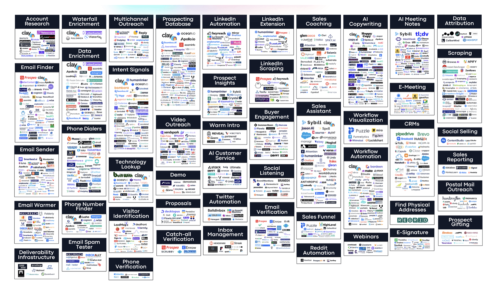
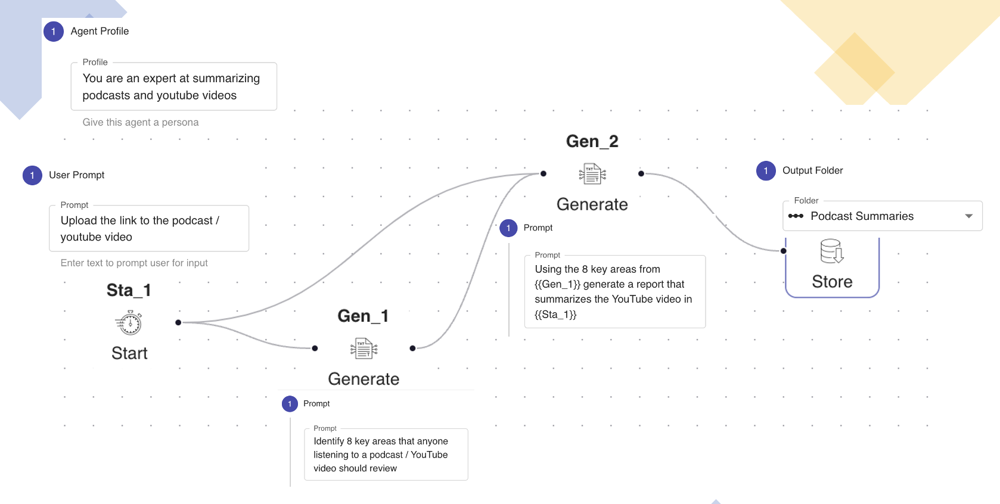
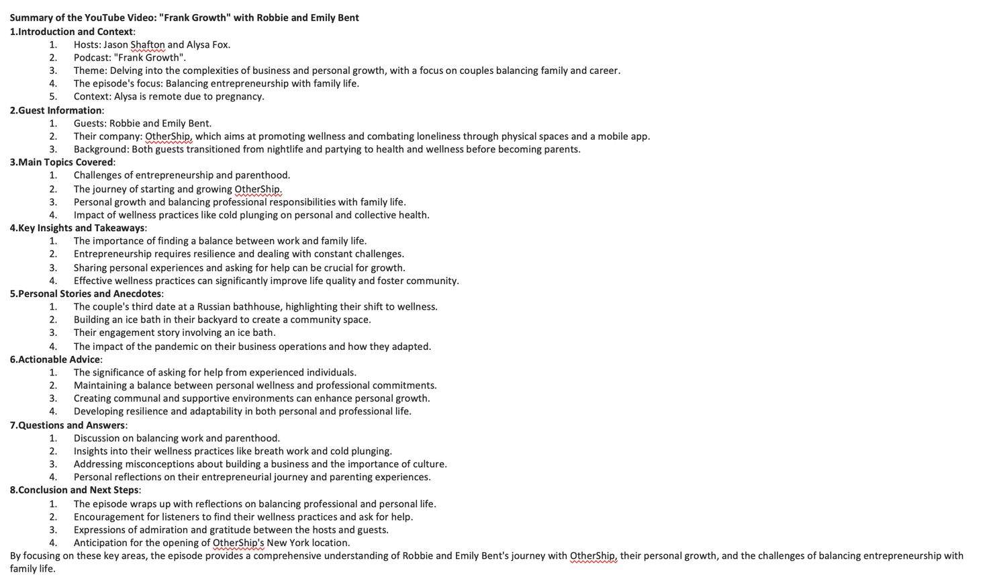

I spend a lot of time listening to podcasts and watching YouTube videos. It is something I cannot avoid in this new job I have chosen as things are changing so quickly in GenAI that it is hard to keep up.
In fact Gordon Lindsay and I were just talking about this today - at some point this rate of change is going to be too much for humans to keep up with. The way I feel is that I am chasing this train and every time I feel that I am catching up to it, it just puts on a burst of speed and pulls away. Some days I feel like just stopping and standing still but then I know that I will never be able to catch up with the train.
I was chatting with Sanjeev Agrawal yesterday about AI Sales tools and shared this infographic with them that ColdIQ has curated - https://www.coldiq.com/sales-software-landscape

That being said, I've always felt that GenAI will somehow be part of the solution (not the whole solution) and it definitely is part of the problem. So in my quest to keep up with the train, I have been playing around with creating simple 'agents' that save me a little time.
Coming back to the topic of this post - I need to stay on top of lots of YouTube videos and podcasts but I cannot spend an hour listening to each of them. I cannot even spend 30 mins listening to them at 2X speed. So I decided to use AnyQuest to build a very simple agent. The agent does 3 things -
Now in 5 mins I can quickly understand what is going on in the podcast.
I am pretty sure there are products I could buy that would do this, but in my quest to develop a GenAI mindset, I want to get comfortable building these myself, so that the next time I come across another productivity hack where there is no product, I can build something myself.

What I like about building this as an agent as opposed to just prompting is that now I can reuse this and it is repeatable. I can also enhance it - for example, I could provide it my list of 8 areas to summarize as the input to the start activity, then I could have a task that rationalizes my list of 8 with the 8 that the LLM came up with and create an uber list that it uses to generate the output.
I decided to test this on a podcast I was asked to be on by Jason Shafton. Jason talks to couples that are entrepreneurs and I was very intrigued by what topics are covered in such a podcast and gave it a link to the first episode - https://www.youtube.com/watch?v=G7oVPte0lH4&t=5s and the summary generated was pretty spot on.

I know this is not earth shattering, but there are these mini productivity hacks that can save folks a lot of time. Where this all goes and if there ends up being an agent to rule them all, remains to be seen.
For those that are interested in how this agent works here is a video - https://youtu.be/kmTmM71q9co.